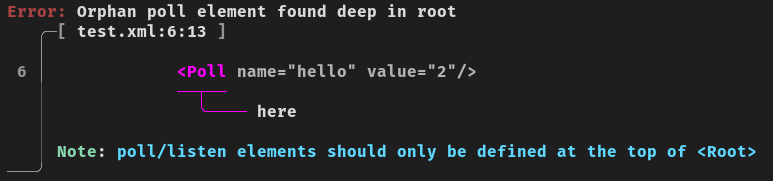

Introduction
XmlMan is an elegant XML-to-Rhai transpiler for Ewwii, designed to make UI definitions and data structures concise, expressive, and scriptable. It combines the readability of XML with the flexibility of Rhai scripting, giving you precise error reporting without the struggle of Ewwii's Rahi API's.
Configuring
Making a configuration with XmlMan is really easy and straightforward due to the declarative style of xml.
Just define what the UI looks like, and you will be done!
Prerequisites
Before using XmlMan, you should have a basic understanding of XML, its structure, tags, and attributes. This documentation assumes you're already familiar with these concepts and focuses on how XmlMan extends or interacts with them.
If you're completely new to XML, it's worth exploring some tutorials or online resources to get a foundational grasp. Understanding XML will help you navigate XmlMan more effectively and avoid confusion.
Basic Setup
<!-- The <Root> element is important! -->
<Root>
<Window name="Foo">
<Label text="boo"/>
</Window>
</Root>
Let's analyze the above config.
At the top of this example, we can see a <Root> element (see rules#rule-1) in which is a wrapper that contains your configuration. It is a mandotary requirement as xml can't handle multiple widgets at the top level.
And inside the root, we can see a <Window> element. This element is basically an application window to which you can add widgets to. And the <Label> element inside the window is a label widget which shows up inside our window when its opened.
Configuration Rules
These rules ensure that the structure and logic of your configuration remain flexible, safe, and prone to less runtime errors.
Currently there are only 2 rules, but as XmlMan matures, many more rules may appear.
Rule 1 - Use a <Root> Element
Always wrap all widgets and configuration elements within a single <Root> element. This safely aligns with ewwii's model and also allows having multiple elements in a configuration because in xml, we may only have root 1 element.
<Root>
<Window name="1">
<!-- ... -->
</Window>
<Window name="2">
<!-- ... -->
</Window>
</Root>
Rule 2 - Avoid Orphaned Poll/Listen Handlers
Poll and Listen handlers must always be defined at the root level and not within other widgets like <Box> or <Window>. Ewwii ignores orphaned handlers but XmlMan rejects it directly for safe configuration.
<Root>
<!-- valid -->
<Poll var="valid"></Poll>
<Window name="1">
<Box>
<!-- orphan -->
<Poll var="orphan"></Poll>
</Box>
</Window>
</Root>
Widget API
Top Level
-
defwindow
<Window></Window> -
poll
<Poll></Poll> -
listen
<Listen></Listen>
Containers
-
box
<Box></Box> -
centerbox
<CenterBox></CenterBox> -
eventbox
<EventBox></EventBox> -
overlay
<Overlay></Overlay> -
stack
<Stack></Stack>
Controls
-
button
<Button></Button> -
slider
<Slider></Slider> -
input
<Input></Input> -
checkbox
<CheckBox></CheckBox> -
color_button
<ColorButton></ColorButton> -
color_chooser
<ColorChooser></ColorChooser> -
combo_box_text
<ComboBoxText></ComboBoxText>
Feedback & Display
-
tooltip
<ToolTip></ToolTip> -
progress
<Progress></Progress> -
circular_progress
<CircularProgress></CircularProgress> -
graph
<Graph></Graph> -
image
<Image></Image> -
label
<Label></Label> -
calendar
<Calendar></Calendar>
Layout & Behavior
-
transform
<Transform></Transform> -
revealer
<Revealer></Revealer> -
scroll
<Scroll></Scroll> -
expander
<Expander></Expander>
Expressions
Expressions are one of the most important concepts in xmlman which makes it more flexible.
Expressions
XmlMan supports writing Rhai expressions inside strings. This is both a powerful feature and a potential weakness.
Why it's a superpower
This feature allows XmlMan to be dynamic rather than purely static, giving you more flexibility.
Why it's a weakness
It’s a weakness because it allows arbitrary Rhai code. XmlMan cannot validate these expressions at parse time, so they may cause errors during runtime.
How to use expressions
Expressions are written inside ${}.
Example:
<?xml version="1.0" encoding="UTF-8"?>
<Root>
<Window name="Banana">
<Box>
<!-- The expression inside ${} is a Rhai expression -->
<Label text="${2 + 2}"/>
</Box>
</Window>
</Root>
Special Expression: @no_quote
XmlMan provides a special expression called @no_quote that allows you to assign non-string values (like booleans, integers, or other raw data) to element attributes. Normally, attribute values are wrapped in quotes and interpreted as strings. Using @no_quote tells the transpiler not to quote the value.
How It Works
In XmlMan, XML attributes are normally always quoted, which means values are treated as strings. Sometimes, you want to assign raw values like booleans or numbers (without quotes). The @no_quote expression makes this possible.
XML Example
<?xml version="1.0" encoding="UTF-8"?>
<Root>
<Window name="Banana">
<Box>
<!-- @no_quote(false) ensures this is a boolean, not a string -->
<Label text="foo" visible="@no_quote(false)"/>
</Box>
</Window>
</Root>
Here, visible="@no_quote(false)" assigns a boolean false instead of the string `false`.
Transpiled Rhai Code
When the above XML is transpiled, it produces the following Rhai code:
fn Banana_child() {
box(#{}, [
label(#{
"text": `foo`, // string
"visible": false // boolean
})
])
}
enter([
defwindow("Banana", #{ }, Banana_child())
])
Important
If you write
@no_quote(val) some_other_val, the engine will still wrap the entire value in quotes. Only the direct use of@no_quote(val)ensures the value remains unquoted.
Caution
When using
@no_quote,XmlMancannot guarantee that the resulting code is valid. Make sure the values you pass are appropriate for the context.
Errors
Errors are one of the main reasons why you should use XmlMan. It uses the ariadne crate to output pretty errors that everyone can understand.
Here is an example error:

Check Errors in XmlMan
XmlMan performs several validation checks before compiling XML to Rhai. If a check fails, you will receive a check error that helps identify the issue.
What a Check Error Looks Like
A check error typically contains:
- Error level: e.g.,
[ERROR] - Check error ID: e.g.,
[CE01] - Message: describes what went wrong
Example
[ERROR] [CE01] Enter not found in internal tree. A <Root> should exist in the xml markup.
Here’s what this means:
[ERROR]: Severity level[CE01]: Check error ID, which you can reference in the documentation- Message: Explains the missing
<Root>element
All check errors
Are you curious to learn about all check errors in XmlMan, or just want to look up a check error?
Checkout the check error list.